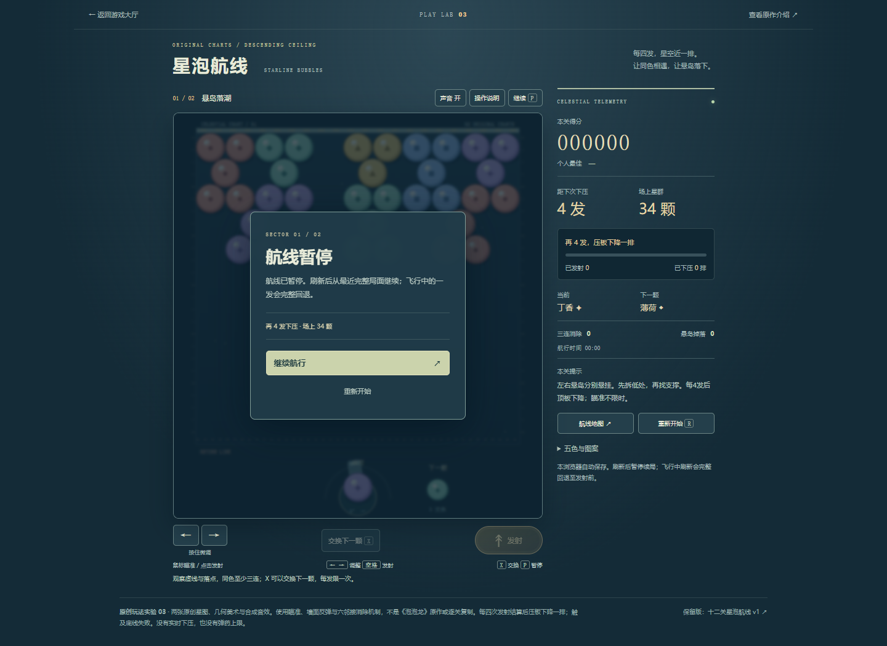
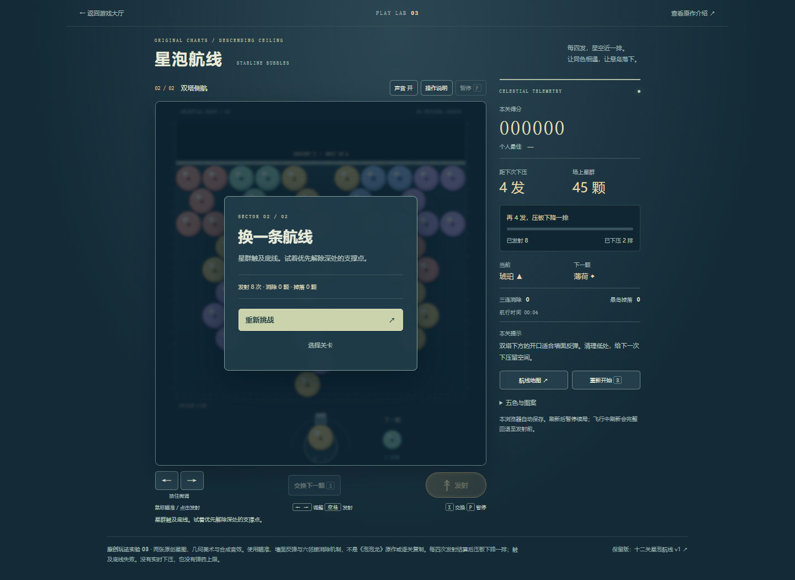
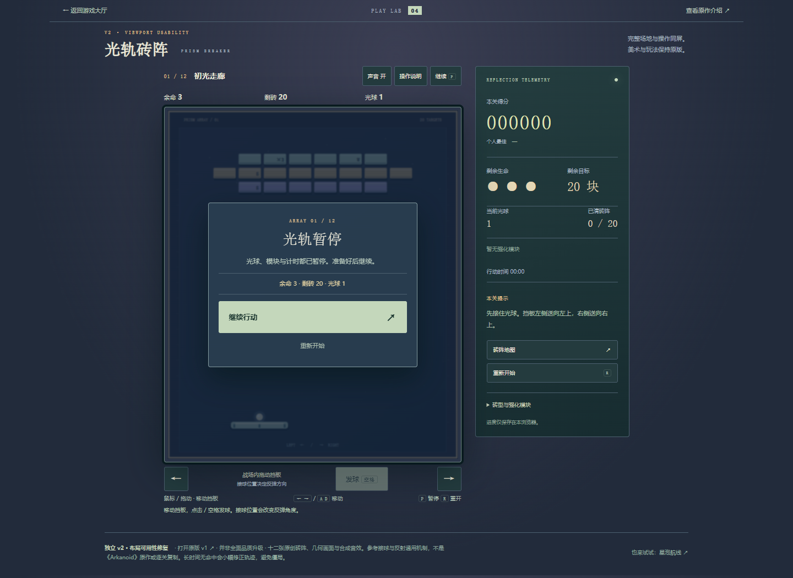
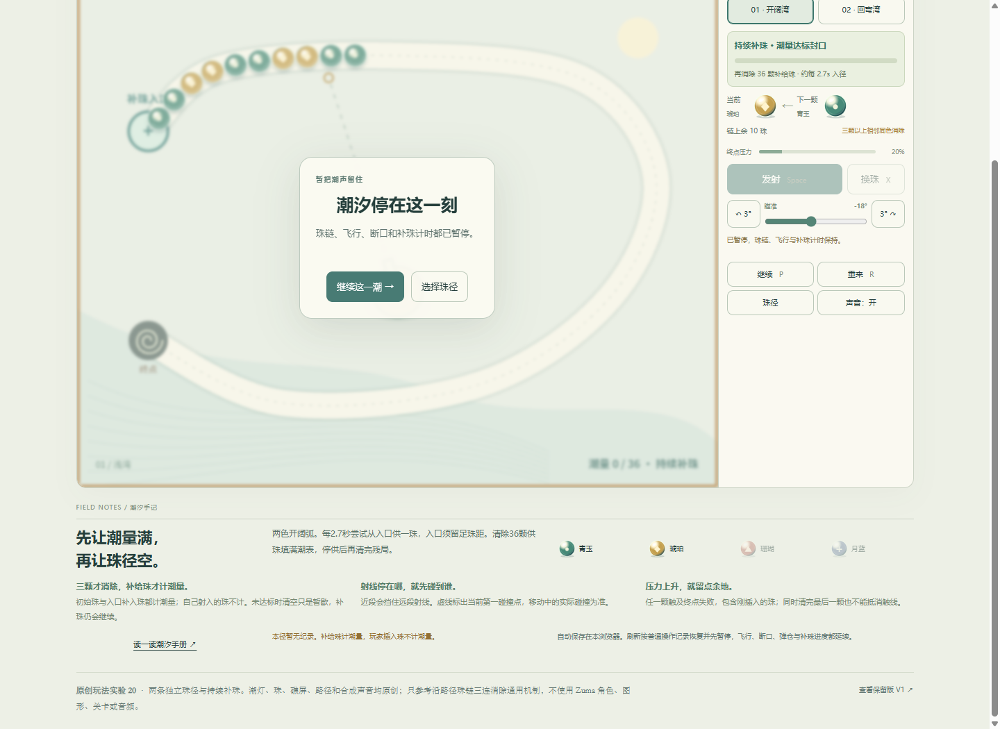
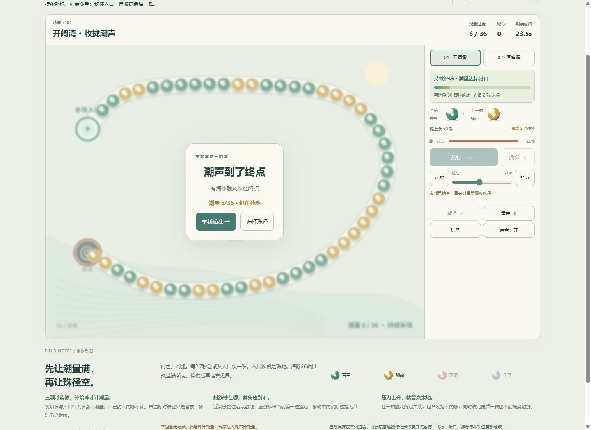

三款有限流程通过，未确认需修复的缺陷；运行代码保持不变。星泡v2、光轨v2、潮汐v2共15次原生标签切换与3次继续后输入检查。
真实公开页基线0589f2b。现有Chromium独立profile，1440×1050桌面；原生CDP普通输入，浏览器可信hidden/visible事件。没有游戏状态、时间或存档注入，没有伪造visibilitychange。
| 作品 | 原规则终态 |
|---|---|
| 星泡v2 | 第二图低效8发触底，4.3333活动秒 |
| 光轨v2 | 刻意躲开球，三次自然失球，12.0833活动秒 |
| 潮汐v2 | 一次发射后等待，126.5417活动秒触线；不是超时 |
仅检查所列三款/短流程/失利终态。非真机后台、手机触控、全关卡、真人手感或声音验收。默认Playwright强制可见的空白探针不计通过；改用独立原生CDP后才得到可信事件。发布只追加报告和索引，代码版本一致性由发布后独立核验。
完整方法与边界 · 摘要 · 星泡事件/快照 · 光轨 · 潮汐 · 原生空白探针 · 验证脚本 · CDP辅助




